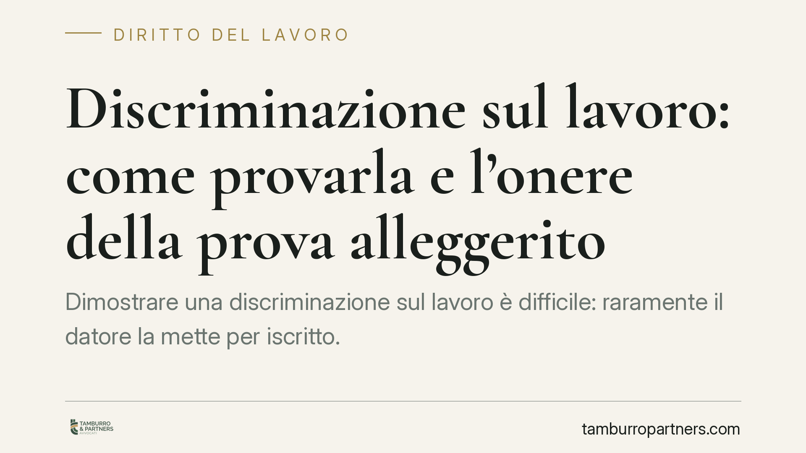

Discriminazione sul lavoro: come provarla e l'onere della prova alleggerito
Dimostrare una discriminazione sul lavoro è difficile: raramente il datore la mette per iscritto. La legge lo sa e, per la discriminazione di genere, alleggerisce l'onere probatorio a carico del lavoratore. Vediamo quali fattori sono protetti, quali fonti li tutelano e come indizi e dati statistici possono reggere in giudizio.

Il problema pratico
Chi si sente discriminato sul lavoro affronta un ostacolo concreto: la prova. Nessun datore dichiara di aver escluso una lavoratrice perché incinta o di aver bloccato le progressioni di un iscritto al sindacato. La condotta discriminatoria si nasconde dietro motivazioni apparentemente neutre.
Proprio per questo l'ordinamento non pretende la prova piena. In alcuni casi consente al lavoratore di limitarsi a fornire elementi indiziari, spostando sul datore l'onere di dimostrare che non vi è stata discriminazione.
Inquadramento normativo
Occorre distinguere le fonti a seconda del fattore protetto, perché non esiste un'unica norma che copra ogni ipotesi.
Per le discriminazioni di genere vale l'art. 40 del D.lgs. n. 198/2006 (Codice delle pari opportunità). La norma prevede che, quando il ricorrente fornisce elementi di fatto - anche desunti da dati statistici - idonei a fondare in termini precisi e concordanti la presunzione dell'esistenza di atti discriminatori, spetta al convenuto l'onere della prova sull'insussistenza della discriminazione. È l'inversione parziale dell'onere della prova: il lavoratore non deve provare tutto, ma deve comunque portare indizi seri e coerenti.
Gli altri fattori hanno basi diverse. Le discriminazioni per età, religione, convinzioni personali, disabilità, orientamento sessuale trovano tutela nel D.lgs. n. 216/2003, attuativo della direttiva europea 2000/78/CE (in particolare l'art. 4 sull'onere probatorio). La discriminazione per motivi sindacali è colpita dall'art. 15 dello Statuto dei lavoratori (L. n. 300/1970), che sanziona con la nullità gli atti diretti a discriminare per l'attività o l'affiliazione sindacale. Il rito processuale applicabile a queste controversie è quello disciplinato dal D.lgs. n. 150/2011.
La Cassazione ha più volte confermato che il meccanismo dell'onere alleggerito impone al lavoratore di allegare elementi presuntivi gravi, precisi e concordanti, e non semplici sospetti. Il principio è consolidato: in mancanza del numero esatto di una singola pronuncia, ci si attiene a questa impostazione costante della giurisprudenza di legittimità.
Discriminazione diretta e indiretta
La distinzione è decisiva per capire quanto pesano le statistiche.
Si ha discriminazione diretta quando una persona è trattata meno favorevolmente di un'altra in una situazione analoga, a causa di un fattore protetto: ad esempio la mancata assunzione dichiaratamente legata a una gravidanza. Qui contano soprattutto gli indizi individuali e comparativi.
Si ha discriminazione indiretta quando una disposizione, un criterio o una prassi apparentemente neutri mettono in svantaggio un gruppo protetto. In questo caso i dati statistici diventano centrali: dimostrare che una certa regola penalizza in modo sistematico le donne, gli over 50 o gli iscritti a un sindacato può fondare da solo la presunzione discriminatoria. Non serve un intento malevolo: rileva l'effetto della prassi.
Implicazioni pratiche
Per chi si ritiene discriminato, questo significa che la battaglia si vince costruendo un quadro indiziario, non cercando la "pistola fumante".
Sono elementi utilizzabili in giudizio:
- promozioni sistematicamente negate rispetto a colleghi con pari o minore anzianità e competenze;
- l'esclusione o il demansionamento al rientro dalla maternità;
- disparità retributive non giustificate da ragioni oggettive;
- l'isolamento o la penalizzazione coincidente con l'adesione a un sindacato o con un'iniziativa sindacale;
- dati aggregati aziendali che mostrano uno svantaggio ricorrente per un gruppo protetto.
Raccolti questi indizi, l'onere di spiegare le proprie scelte si sposta sul datore, che dovrà provarne la natura oggettiva e non discriminatoria.
Cosa fare in concreto
- Documentare per iscritto ogni episodio rilevante: date, colleghi coinvolti, comunicazioni aziendali, ordini di servizio.
- Conservare buste paga, mansionari, e-mail e ogni dato utile a costruire il confronto con colleghi in posizione analoga.
- Verificare quale sia il fattore protetto in gioco e la fonte normativa corrispondente (genere, età, religione, disabilità, orientamento, motivi sindacali), perché la tutela cambia.
- Individuare con precisione l'atto da contestare e il relativo termine: alcuni comportamenti (come il licenziamento discriminatorio) sono soggetti a specifici termini di impugnazione, mentre l'azione contro la discriminazione ha regole proprie; i termini variano a seconda dell'atto impugnato e vanno verificati caso per caso.
- Raccogliere, dove possibile, dati statistici o aggregati che evidenzino uno svantaggio di gruppo, utili soprattutto per la discriminazione indiretta.
---
Contributo informativo a cura di Tamburro & Partners - Avv. Giuseppe Tamburro. Non costituisce parere legale.
Ogni storia di lavoro ha i suoi tempi.
Se gestisci HR e vuoi un confronto su contenzioso, ispezioni o licenziamenti, scrivi allo studio. Ti rispondiamo entro un giorno lavorativo.